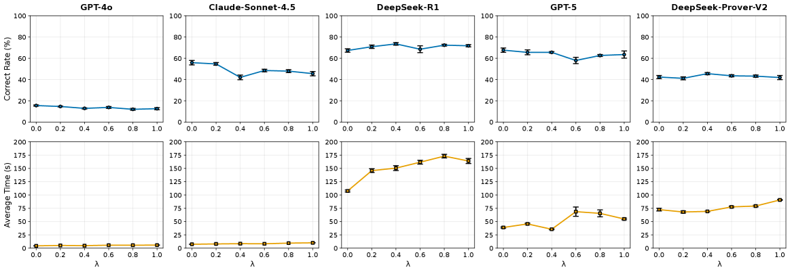

Evaluates LLM provers on an obfuscated Natural Number Game in Lean 4 to probe architectural reasoning.
Abstract
While Large Language Models have achieved notable success on formal mathematics benchmarks such as MiniF2F, it remains unclear whether these results stem from genuine logical reasoning or semantic pattern matching against pre-training data. This paper identifies Architectural Reasoning: the ability to synthesize formal proofs using exclusively local axioms and definitions within an alien math domain, as the necessary ability for future automated theorem discovery AI. We use the Obfuscated Natural Number Game, a benchmark to evaluate Architectural Reasoning. By renaming identifiers in the Natural Number Game in Lean 4, we created a zero-knowledge, closed environment. We evaluate state-of-the-art models, finding a universal latency tax where obfuscation increases inference time. The results also reveal a divergence in robustness: while general models (Claude-Sonnet-4.5, GPT-4o) suffer performance degradation, reasoning models (DeepSeek-R1, GPT-5, DeepSeek-Prover-V2) maintain the same accuracy despite the absence of semantic cues. These findings provide a quantitative metric for assessing the true capacity for mathematical reasoning.
Problem
LLMs achieve high scores on formal math benchmarks like MiniF2F, but it is unclear whether this reflects genuine logical reasoning or pattern matching against pre-training data. A method to distinguish these capabilities is needed.
Approach
The authors define Architectural Reasoning as the ability to synthesize proofs using only local axioms in an alien domain, and introduce the Obfuscated Natural Number Game (O-NNG) benchmark. By renaming all identifiers in the Lean 4 Natural Number Game, they create a zero-knowledge closed environment. They evaluate GPT-4o, Claude-Sonnet-4.5, DeepSeek-R1, GPT-5, and DeepSeek-Prover-V2 across varying obfuscation noise levels.

Figure 1: LLM performance metrics across varying noise levels \lambda . The plots illustrate Correct Rate (%) and Average Time (s) for GPT-4o, Claude-Sonnet-4.5, DeepSeek-R1, GPT-5, and DeepSeek-Prover-V2. Error bars represent standard deviation over 5 independent runs.
Results
All models exhibit a latency tax from obfuscation. General models (Claude-Sonnet-4.5, GPT-4o) suffer performance degradation, while reasoning models (DeepSeek-R1, GPT-5, DeepSeek-Prover-V2) maintain accuracy despite the absence of semantic cues. DeepSeek-Prover-V2 shows the highest robustness (p=0.3077 for correct rate change).
Model
Correct Rate p-value
Avg Time p-value
GPT-4o
0.0242*
0.0004*
Claude-Sonnet-4.5
0.0001*
0.0000*
DeepSeek-R1
0.1573
0.0000*
GPT-5
0.0863
0.0001*
DeepSeek-Prover-V2
0.3077
0.0000*
Statistical significance of performance degradation under obfuscation